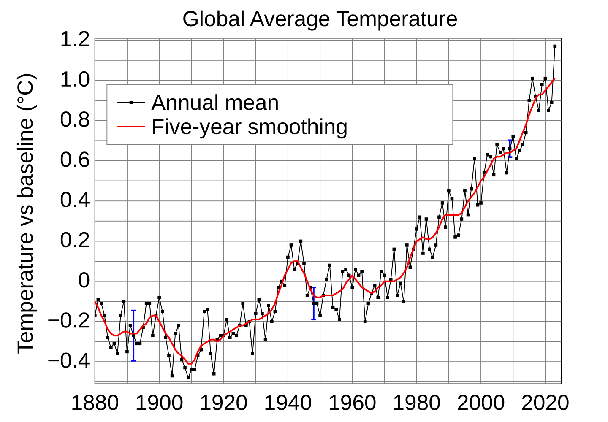

气候变化数据 2026
从天气数据角度理解升温、强降雨、干旱与城市风险。
气候变化数据把长期观测与近实时天气监测结合起来。WeatherIndex 将气候内容作为背景知识，城市页面仍以实时预报 API 为核心。
重点数据
- 相对历史基准的气温距平。
- 热浪频率和持续时间。
- 极端降雨强度与干旱持续性。
来源: Wikimedia Commons global temperature anomaly chart · 最后更新 2026-06-27

从天气数据角度理解升温、强降雨、干旱与城市风险。
气候变化数据把长期观测与近实时天气监测结合起来。WeatherIndex 将气候内容作为背景知识，城市页面仍以实时预报 API 为核心。
来源: Wikimedia Commons global temperature anomaly chart · 最后更新 2026-06-27
热带气旋如何命名、退役以及跨区域传播预警信息。
热带气旋风速等级、影响分类与读图方式。
重大台风记录如何整理、比较与复盘。
太平洋海温异常偏暖如何影响降雨、季风与季节性天气风险。
ENSO 冷位相如何影响季节降雨、风暴路径和区域风险。
解释厄尔尼诺、拉尼娜、中性位相以及全球遥相关。
温室气体、升温趋势与极端天气之间的科学联系。
冰川消融和海洋增暖如何提高沿海天气与洪涝风险。
碳中和目标如何连接排放、能源系统与气候风险。
用于每月复盘全球高温、洪水、风暴、干旱和寒潮事件。
持续高温和低温如何形成，以及对健康和基础设施的影响。
不稳定能量、风切变和超级单体如何造成强对流天气。
传统节气如何与现代天气和气候观测相互印证。
城市为什么更热，以及街区尺度如何降低热压力。
从地面观测、卫星云图到数值模式和 AI 辅助预报。